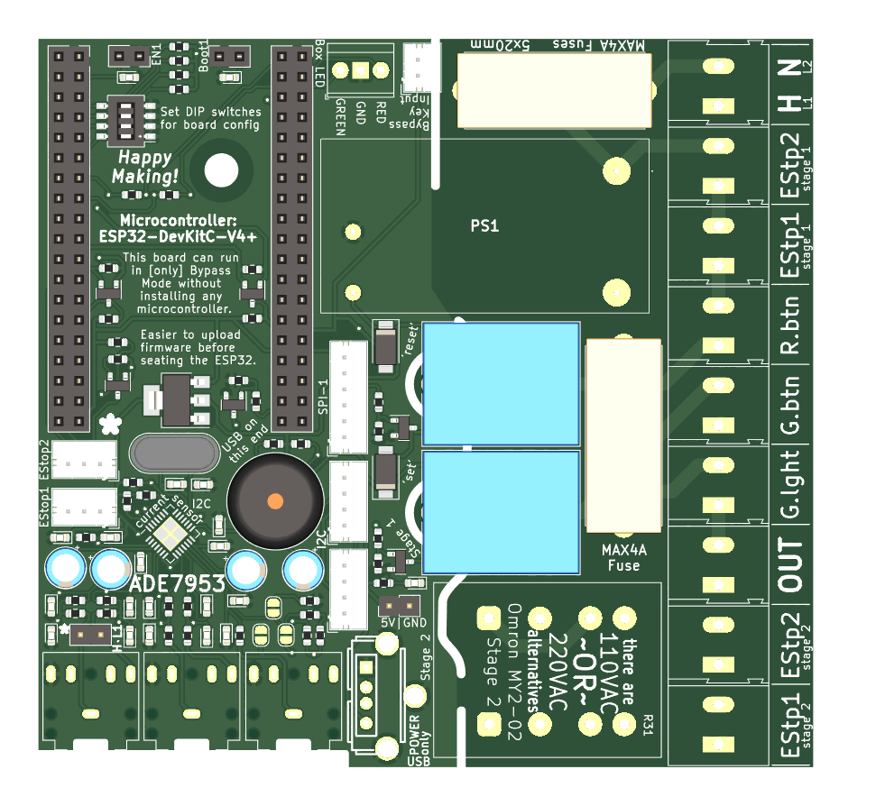

TLDR: the designs are described withtin this repo. Board details at the bottom...
First, who might want to use a system to control access to tools? Let's introduce you to MakeHaven, a nonprofit Fab Lab/ Makerspace in New Haven, Connecticut, USA:
Tool authorization has been a safety mainstay of MakeHaven for years. This is the hardware that makes that safety measure possible. It has gone through several generations, and contributions from many individuals.
MakeHaven members do a short training process to aquire authorization for a new tool, and then can gain access to use it. Some members have access to nearly all the tools, well in excess of 100 items. Although most members do not need to worry about the details, they can use an RFID card to access tools for which they have been authorized. Behind the scenes, this system runs on some custom hardware and a database that manages and logs members' access. The collective effect of all this is that the shop is much safer, better managed, and more easily insured.
Jump to the bottom to get all the nitty gritty, but here we start to answer 'How?'
The software integrates many layers: a complex web server, database, and firmware to bring together the constellation of devices that are required to make this system operate.
There is a custom server that facilitates communication between all the devices in this system. It references a databases, generates logs, and actually determines authorization from available data. The server itself is a set of Docker containers that can be built and managed easily. Many of these are nearly stock installations, of things like Home Assistant and ESPHome. However, there is one crritical custom container that brings all of these together. This is described in its own GitHub repo [currently private, will link later].
The database is currently house in the MakeHaven website itself, but there are plans to migrate this to a separate database for future evolution of this tool authorization system. Additionally, local caching of the database allows for faster access determination and an ability to keep the system running if internet service is interrupted in the makerspace.
As an extension of ESPHome, the Firmware is compiled from YAML. This firmware is built from a shared set of files, with each individual device having only a single 'main file' to differentiate it. In that one 'main file' for each device, a tool controller, card reader, door locks, etc can be defined in as little as 50 lines of YAML. Connecting these devices must be done in coordination with the server and some network management.
The hardware is what this repo is all about. The KiCad designs and other supporting information is what is contained here.
This custom-designed board holds enough for an all-in-one hardware solution.
The working pieces of this entire system is a set of IOT relays and contactors that control power flowing to tools in the workshop. This is all based around an ESP32 microcontroller, specifically with the "ESP32-DevKitC-V4+" footprint. The design here attaches that ESP32 to relays, a series of buttons and lights, I2C connections to RFID card readers, a dedicated ADE7953 current sensor to monitor the tool's use and more. The ESP32 seats in place, and a few wires connect the needed external buttons to make a fully operational tool control box.
These boxes should be wired in-line with power to the tool they control and mounted nearby for easy operation.
Often, it is helpful to have an RFID card reader that is in a different location than the tool or door activator that is related. The design of this small baord is just enough to connect an ESP32 to an I2C card reader and the small amount of hardware to make an effective stand-alone card reader. As a sheer bonus, there is enough space added in for a Waveshare E-paper Display in case that may be useful to the system in the future.